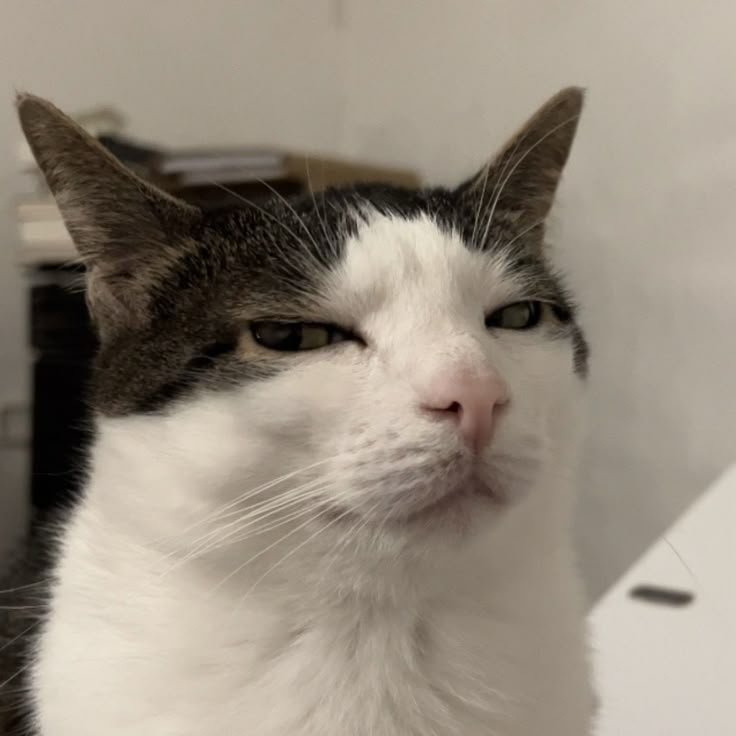
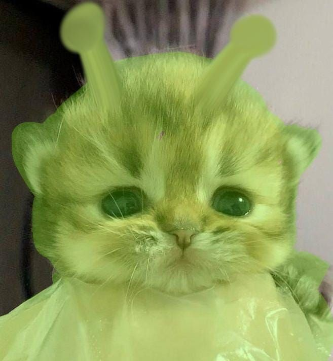
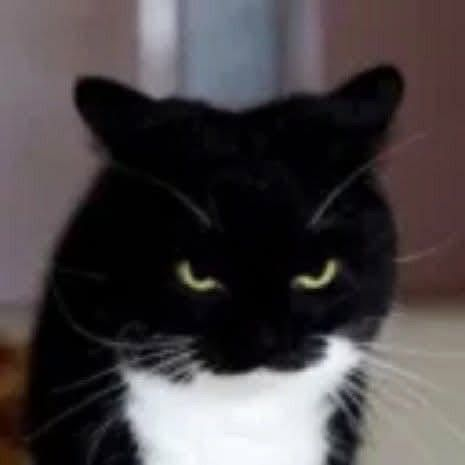
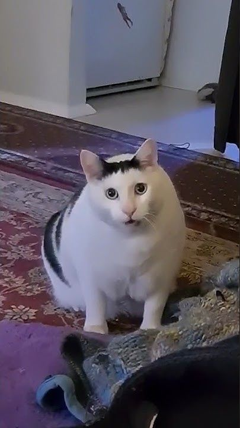

Luna
O pisică jucăușă care adoră să toarcă în brațele voluntarilor.

Milo
Salvat din stradă, acum este un răsfățat al sanctuarului.

Sasha
Un suflet timid, dar blând, care și-a găsit liniștea aici.
Max
Un motan curios și jucăuș, mereu gata de aventură.

Bella
Blândă și iubitoare, perfectă pentru o familie.

Oliver
Un motan cu personalitate aparte și ochi expresivi.

Mimi
Mică și drăgălașă, mereu dornică de joacă.

Simba
Curajos și loial, o adevărată vedetă.

Mia
Calmă și dulce, o companie perfectă pentru liniște.